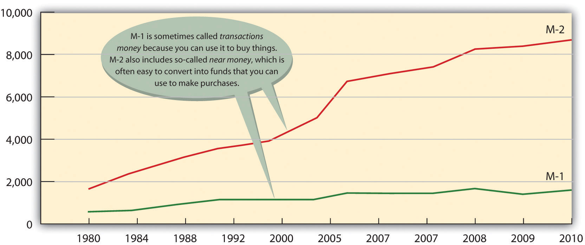

Finance is about money. So our first question is, what is money? If you happen to have one on you, take a look at a $5 bill. What you’ll see is a piece of paper with a picture of Abraham Lincoln on one side and the Lincoln Memorial on the other. Though this piece of paper—indeed, money itself—has no intrinsic value, it’s certainly in demand. Why? Because money serves three basic functions. MoneyAnything commonly accepted as a medium of exchange, measure of value, and store of value. is the following:
To get a better idea of the role of money in a modern economy, let’s imagine a system in which there is no money. In this system, goods and services are bartered—traded directly for one another. Now, if you’re living and trading under such a system, for each barter exchange that you make, you’ll have to have something that another trader wants. For example, say you’re a farmer who needs help clearing his fields. Because you have plenty of food, you might enter into a barter transaction with a laborer who has time to clear fields but not enough food: he’ll clear your fields in return for three square meals a day.
This system will work as long as two people have exchangeable assets, but needless to say, it can be inefficient. If we identify the functions of money, we’ll see how it improves the exchange for all the parties in our hypothetical set of transactions.
Money serves as a medium of exchange because people will accept it in exchange for goods and services. Because people can use money to buy the goods and services that they want, everyone’s willing to trade something for money. The laborer will take money for clearing your fields because he can use it to buy food. You’ll take money as payment for his food because you can use it not only to pay him but also to buy something else you need (perhaps seeds for planting crops).
For money to be used in this way, it must possess a few crucial properties:
Money simplifies exchanges because it serves as a measure of value. We state the price of a good or service in monetary units so that potential exchange partners know exactly how much value we want in return for it. This practice is a lot better than bartering because it’s much more precise than an ad hoc agreement that a day’s work in the field has the same value as three meals.
Money serves as a store of value. Because people are confident that money keeps its value over time, they’re willing to save it for future exchanges. Under a bartering arrangement, the laborer earned three meals a day in exchange for his work. But what if, on a given day, he skipped a meal? Could he “save” that meal for another day? Maybe, but if he were paid in money, he could decide whether to spend it on food each day or save some of it for the future. If he wanted to collect on his “unpaid” meal two or three days later, the farmer might not be able to “pay” it; unlike money, food could go bad.
Now that we know what money does, let’s tackle another question: How much money is there? How would you go about “counting” all the money held by individuals, businesses, and government agencies in this country? You could start by counting the money that’s held to pay for things on a daily basis. This category includes cash (paper bills and coins) and funds held in demand depositsChecking accounts that pay given sums to “payees” when they demand them.—checking accounts, which pay given sums to “payees” when they demand them.
Then, you might count the money that’s being “saved” for future use. This category includes interest-bearing accounts, time deposits (such as certificates of deposit, which pay interest after a designated period of time), and money market mutual fundsAccounts that pay interest to investors who pool funds to make short-term loans to businesses and the government., which pay interest to investors who pool funds to make short-term loans to businesses and the government.
Counting all this money would be a daunting task (in fact, it would be impossible). Fortunately, there’s an easier way—namely, by examining two measures that the government compiles for the purpose of tracking the money supply: M-1 and M-2.
So what’s the bottom line? How much money is out there? To find the answer, you can go to the Federal Reserve Board Web site. The Federal Reserve reports that in September 2011, M-1 was about $2.1 trillion and M-2 was $9.6 trillion.Federal Reserve, “Money Stock Measures,” Federal Reserve Statistical Release, http://www.federalreserve.gov/releases/h6/current/ (accessed November 6, 2011). Figure 13.2 "The U.S. Money Supply, 1980–2010" shows the increase in the two money-supply measures since 1980.
Figure 13.2 The U.S. Money Supply, 1980–2010
If you’re thinking that these numbers are too big to make much sense, you’re not alone. One way to bring them into perspective is to figure out how much money you’d get if all the money in the United States were redistributed equally. According to the U.S. Census Population Clock,U.S. Census Bureau, “U.S. World Population Clocks,” U.S. Census Bureau, http://www.census.gov/main/www/popclock.html (accessed November 7, 2011). there are more than three hundred million people in the United States. Your share of M-1, therefore, would be about $6,700 and your share of M-2 would be about $31,000.
Are credit cards a form of money? If not, why do we call them plastic money? Actually, when you buy something with a credit card, you’re not spending money. The principle of the credit card is buy-now-pay-later. In other words, when you use plastic, you’re taking out a loan that you intend to pay off when you get your bill. And the loan itself is not money. Why not? Basically because the credit card company can’t use the asset to buy anything. The loan is merely a promise of repayment. The asset doesn’t become money until the bill is paid (with interest). That’s why credit cards aren’t included in the calculation of M-1 and M-2.
Money serves three basic functions:
(AACSB) Analysis
Instead of coins jingling in your pocket, how would you like to have a pocketful of cowrie shells? These smooth, shiny snail shells, which are abundant in the Indian Ocean, have been used for currency for more than four thousand years. At one point, they were the most widely used currency in the world. Search “cowrie shells” on Google and learn as much as you can about them. Then answer the following questions: